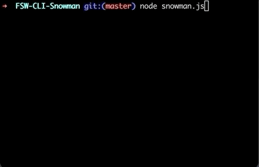

ABOUT
Hello! My name is Cassidy Beni and I am a Web Developer from New York City. Currently, I am enrolled in the highly selective Pursuit fellowship for rising tech professionals and I am refining my technical and professional skills. I would like to improve the statistics of women of color in technology by contributing to this group's ability to network and grow in the tech industry. I’m a patient, resilient, and diligent web developer looking for opportunities to blend my career with my passions. I have experience in JavaScript, HTML and CSS as a full stack developer. I am passionate about learning, music, and basketball, as well as, communication, teamwork, and problem-solving.
PROJECTS
Text-Based Adventure Game: Bank Heist
This is a command line adventure game that is inspired by the movie,Good Time.The objective of this game is to avoid going to jail after robbing a bank by entering answers to questions in the terminal. Source Code

Snowman
This is a command line guessing game against the computer. Similar to Hangman, the objective of this game is to reveal the missing letters before you run out of guesses. You have 6 wrong guesses. Source Code
